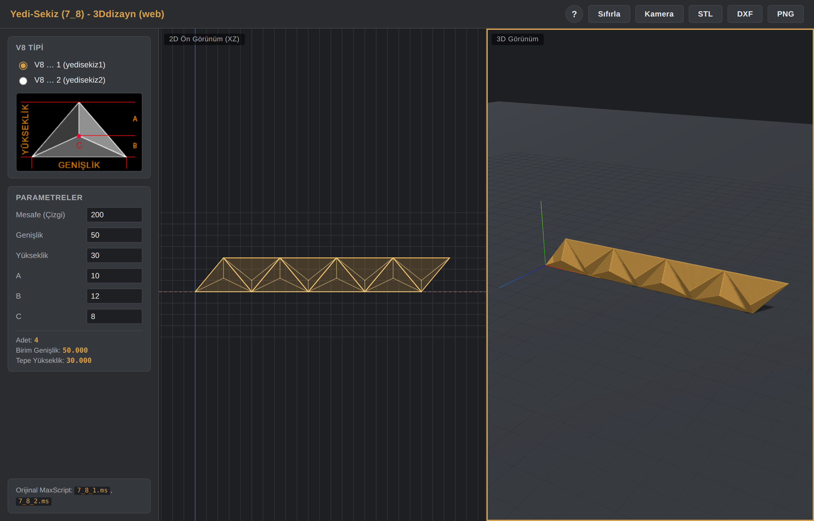
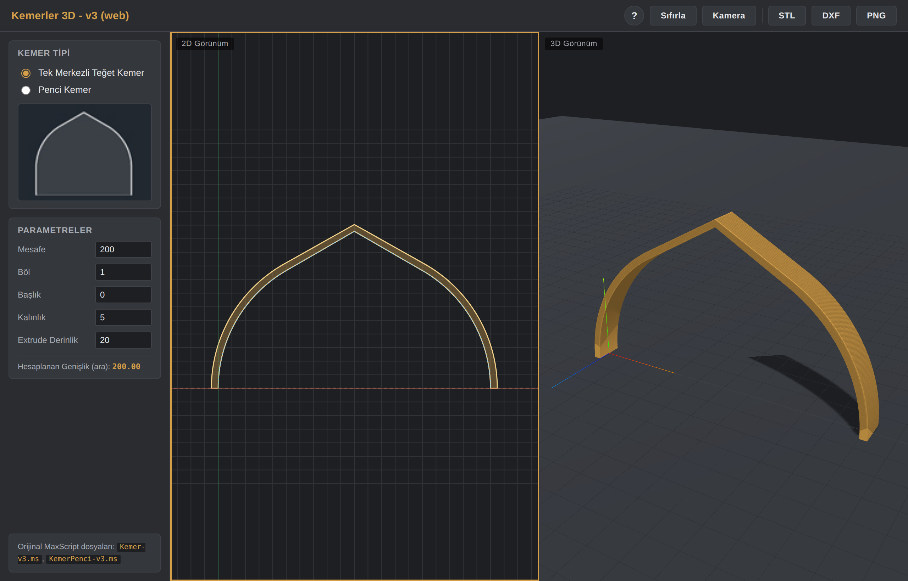
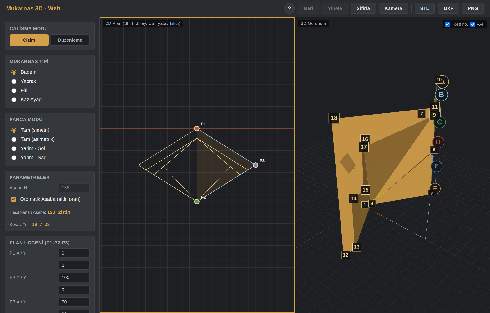
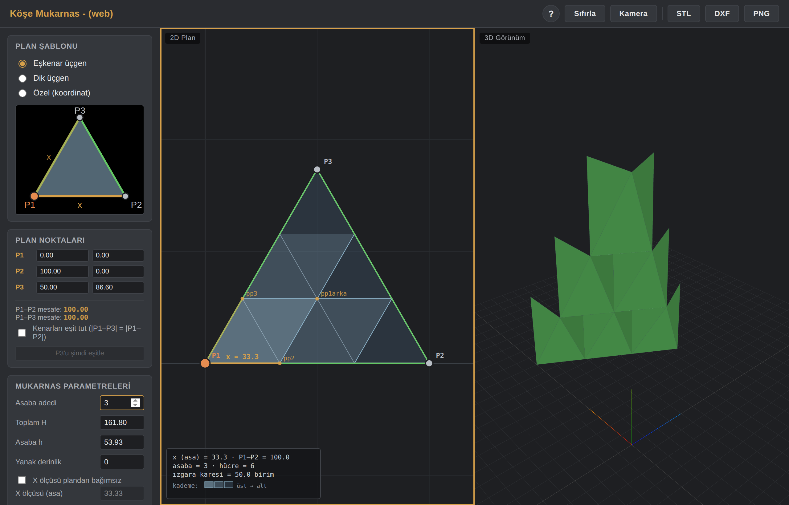
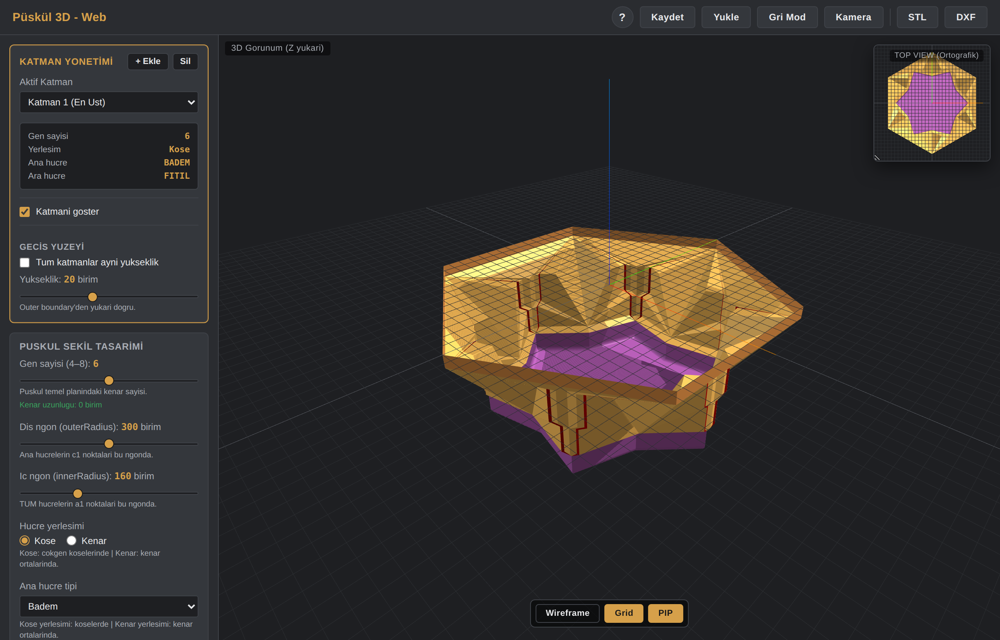
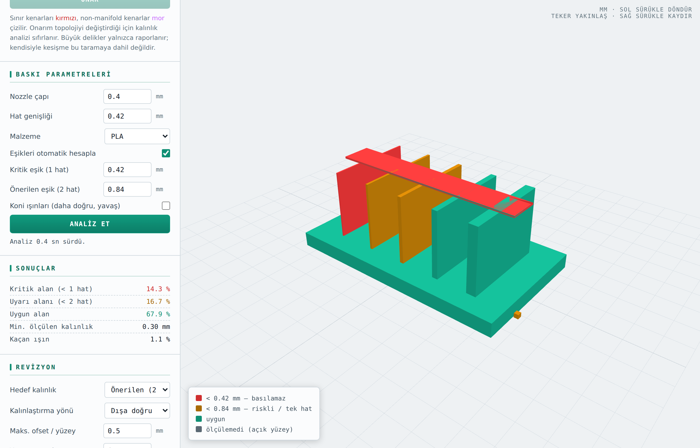

Tasarım Araçları
Geleneksel mimari geometriyi parametrelerle modelleyen araçlar. 2B plan ve 3B görünüm eş zamanlı çalışır; sonucu DXF, STL veya PNG olarak dışa aktarabilirsiniz.




3B Baskı
Modeli baskıya göndermeden önce denetleyen yardımcı araçlar.

Öğrenme
Bir konuyu sıfırdan öğretmek için tasarlanmış uygulamalar.